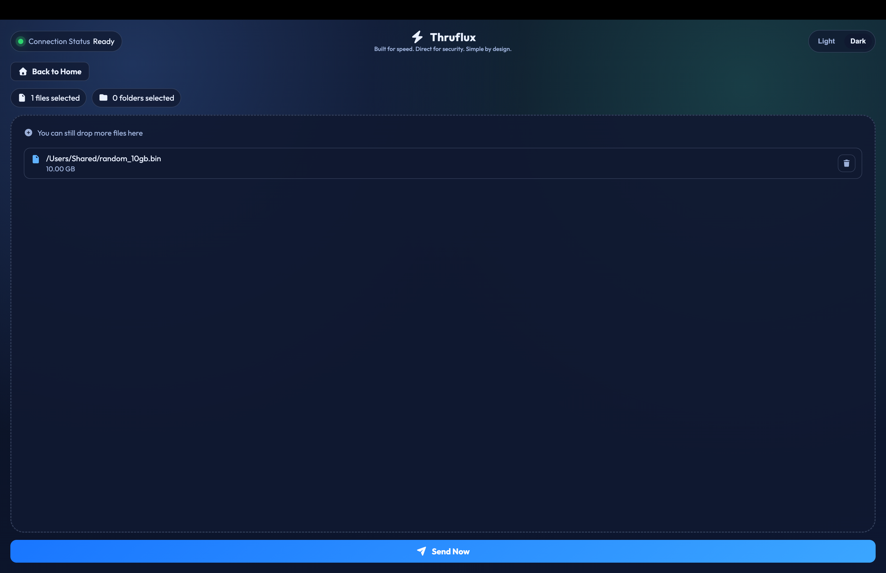
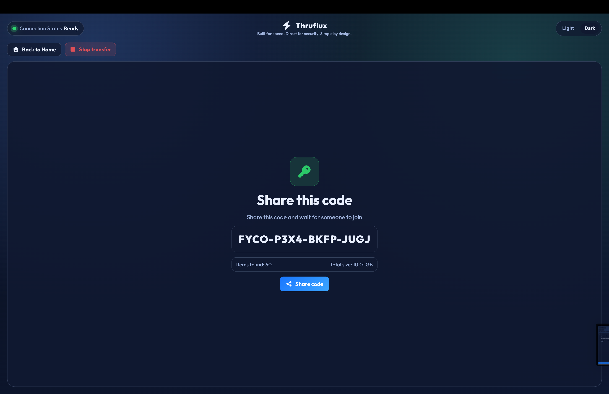
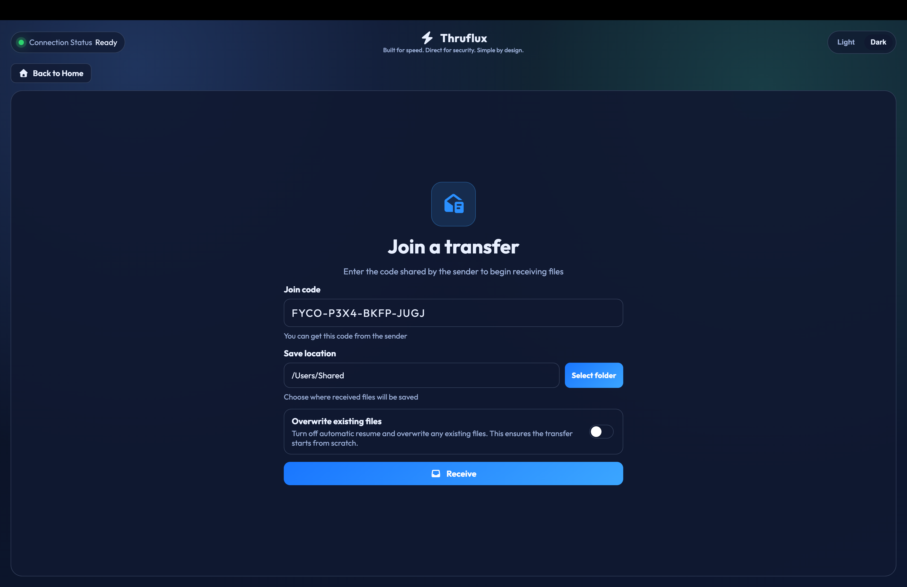
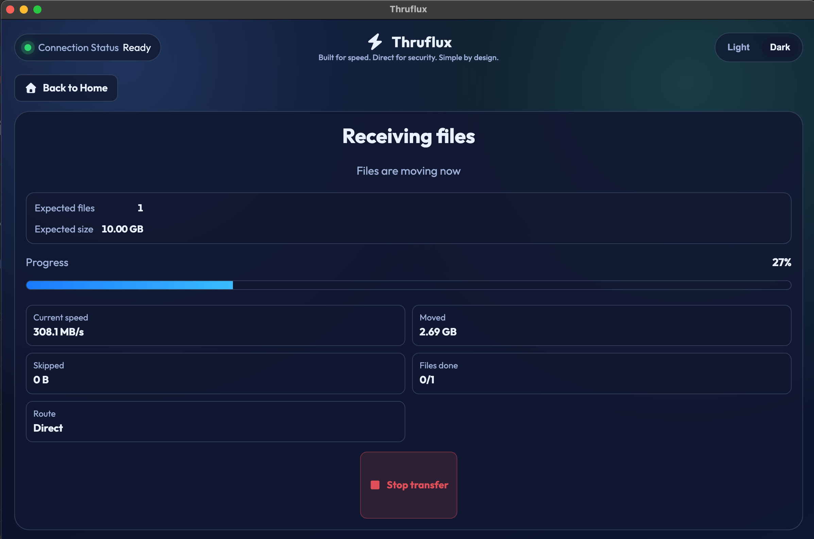

Get Thruflux
Available cross-platform. Download now!
Current version: {{APP_VERSION}}
Built for speed
Thruflux is built on a proven native C++ engine and a modern transport model that focuses on raw transfer performance in real conditions.
- No zip/unzip fuss: folders and many files move as they are, with first-class multi-file transfer support.
- Modern QUIC protocol: optimized for fast, reliable movement over today’s networks.
- Mature C++ libraries and frameworks: tuned for performance-sensitive networking and transfer workloads.
- Resumability: interrupted sessions can continue without restarting from zero.
- Quick start and quick resume: Thruflux starts sending fast and resumes fast by keeping transfer order structured, so it does not need heavy up-front file checking before files begin moving.
- Direct transfer path: no upload-then-download wait. Files start moving right away once connected.
- Light on your system: Thruflux keeps file sending on single connection, so it uses less CPU and memory while transfers run.
Browser-based sharing tools are convenient, but browsers aren’t built for heavy file transfers. They add extra overhead and usually rely on an upload-then-download process through a server, which can slow things down - especially with large files or lots of files. Thruflux runs as a native desktop app powered by a C++ engine and uses direct transfer sessions between devices, allowing it to move large or many files more efficiently and with better performance.
Backed by a proven, strong transfer engine.
| Tool | Transport | Random remote peers | Multi-receiver | 10 GiB file | 1000 x 10 MiB |
|---|---|---|---|---|---|
| Thruflux Modern desktop app / commandline-tool hybrid made for fast direct file sharing | QUIC | Yes | Yes | 2m 20s | 2m 18s |
| Croc Code-based command-line tool for sending files to other people | TCP | Yes | No | 2m 40s | 19m 33s |
| Wormhole Code-based command-line sharing tool that often uses a relay path | TCP (relay) | Yes | No | 22m 20s | N/A (stalled around ~38:59) |
| SCP Classic secure copy command commonly used by developers and server admins | TCP | No | No | 15m 06s | 26m 14s |
| Rsync Popular command-line sync tool for copying many files and folders | TCP | No | No | 15m 18s | 14m 53s |
Results are medians of 3 runs over the public internet on a high-latency route (Chicago sender to Seoul receiver). Times are end-to-end wall-clock duration from sender command execution until receiver completion (or sender completion when no separate receive command exists), not raw transfer-only timing.
Benchmark environment: Vultr instance (2 vCPU AMD EPYC Genoa), 4 GB RAM, NVMe SSD, Ubuntu 24.04.
While rare - if a direct connection is not possible, for example on restrictive networks, Thruflux automatically falls back to a relay so the transfer can still complete. In this case, speeds mainly depend on the relay server’s distance, capacity, and current load. Even in relay mode, Thruflux is designed to maintain solid performance. 🚀
| Mode | 10 GiB file | 1000 x 10 MiB |
|---|---|---|
| Thruflux (TURN relay) | 5m 40s | 5m 35s |
Direct for security
Thruflux is designed around a direct model so your data path stays as tight as possible.
- No middleman: your data is never uploaded and parked on a third-party cloud step. It flows straight from your PC to other PC.
- With strong encryption in transit via modern QUIC-based transport security, no one can ever peek at your data.
- High-entropy join codes designed to be difficult to guess.
If a strict network blocks direct links, Thruflux can still fall back so your transfer completes reliably.
Simple by design
Thruflux keeps sharing simple for everyone while staying powerful.
- No accounts. No sign up.
- Unlimited file size.
- Open source and free forever.
Sender: pick files and folders.

Sender: share the join code.

Receiver: enter join code and press Receive.

Watch the files transfer at fast speed.
